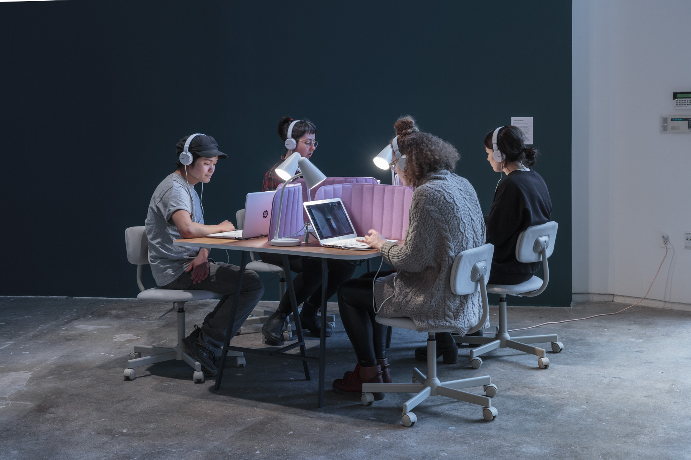

SOMEONE
Software and hardware development by Harvey Moon and Josh Billions. Interface development by Lauren Lee McCarthy. Furniture design in collaboration with and fabrication by Lela Barclay de Tolly. Smart home participant collaborators include Valeria Haedo, Adelle Lin, Amanda McDonald Crowley, and Ksenya Samarskaya. - 2019
Material: custom-designed smart devices, including cameras, microphones, lights, and other appliances.


From the artist:
What boundaries might we hold when it comes to letting AI into our data, our decision making, and our most private spaces?
SOMEONE imagines a human version of Amazon Alexa, a smart home intelligence for people in their own homes. For a two month period in 2019, four participants’ homes around the United States were installed with custom-designed smart devices, including cameras, microphones, lights, and other appliances. 205 Hudson Gallery in NYC housed a command center where visitors could peek into the four homes via laptops, watch over them, and remotely control their networked devices. Visitors would hear smart home occupants call out for “Someone”—prompting the visitors to step in as their home automation assistant and respond to their needs. This video installation presents documentation from the initial performance on four screens throughout the space.

From us:
Agree to our Terms and Conditons
Have you read our Terms and Conditions? If not, don't worry about it. Just click agree and you'll be fine, like what everyone else does.
This amazing artwork explores the extent to which we are willing to give our data and consent to corporations and governments. This artwork is about presence. SOMEONE's presence in particular. "We willingly give access to all our data and live camera feeds to huge corporations. But how does knowing a single human sits on the other side of the system shift our perception? Suddenly we become aware of what is at stake and what is possible."
Lauren Lee McCarthy (she/they) is an artist examining social relationships in the midst of surveillance, automation, and algorithmic living. Lauren is also the creator of p5.js, an open-source art and education platform that prioritizes access and diversity in learning to code, with over 1.5 million users.
Back